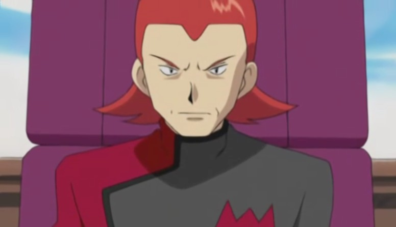
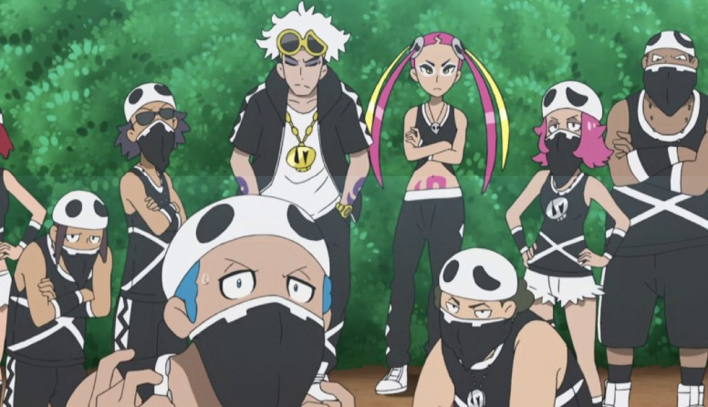

Para além das batalhas de Ginásio e das capturas dos Pokémon, nossos heróis, por muitas vezes, deparam-se com grupos de vilões que desejam a dominação mundial por meio dos Pokémon.
Na maioria das vezes, os vilões presentes no anime de Pokémon são aqueles apresentados nos jogos, possuindo, no entanto, um aprofundamento na narrativa. Porém, há vilões que são exclusivos no anime que acabam aparecendo esporadicamente com o decorrer dos episódios.
Geralmente os vilões do anime têm suas atividades orbitadas no uso do poder de um Pokémon Lendário que seja capaz de alterar o status quo do mundo Pokémon, valendo-se de meios cruéis para capturá-los.
Sem dúvidas, a equipe vilã mais emblemática do anime de Pokémon é a Equipe Rocket. Liderada pelo ex-líder do Ginásio da cidade de Viridian em Kanto, Giovanni, os Rockets têm como objetivo a dominação mundial através do roubo de todos os Pokémon. Ao contrário das demais, a atuação da Equipe Rocket vai além dos limites de Kanto, sendo possível encontrar vários de seus membros em todas as regiões do mundo Pokémon, inclusive monitorando e confrontando as atividades de outras equipes.
Além do roubo de Pokémon, a Equipe Rocket tem um particular interesse na genética dos Pokémon, sendo ela a principal responsável pela criação do Lendário Mewtwo. Porém, ao perceber que foi usado para a destruição, Mewtwo se rebela contra seus criadores, mas Giovanni, insistentemente, tenta recuperar o Pokémon Lendário - isso até os eventos do episódio especial O Retorno de Mewtwo, em que o Pokémon apaga a memória do Líder da Equipe Rocket.
Giovanni geralmente aparece junto com seu Persian, dando ordens aos seus subordinados, raramente saindo do quartel-general da Equipe Rocket. Dentre aqueles, podemos destacar o trio Jessie, James e o Pokémon falante Meowth, que, constantemente, tentam roubar o Pikachu de Ash.
Jessie é uma jovem egocêntrica que sempre está em busca de fama e beleza. Ela se junta à Equipe Rocket após desistir de ser uma Enfermeira Pokémon e sair do Instituto Pokémon pelas suas notas baixas. No decorrer do anime, Jessie é vista participando dos Concursos Pokémon em Hoenn e Sinnoh, ficando no Top 4 neste último, e também das Performances Pokémon, em Kalos. Ela também participou da Conferência da Liga Manalo, em Alola, chegando ao Top 16. Dentre os seus Pokémon, pode-se destacar Wobbuffet, que está ao seu lado desde a primeira série do anime.
James nasceu em uma família de milionários, mas por causa das regras que não queria seguir e, principalmente devido ao seu noivado arranjado com Jessebelle, acabou fugindo de casa e eventualmente uniu-se à Equipe Rocket. No decorrer das séries, James é visto montando armadilhas e robôs que o trio utiliza nas suas artimanhas para roubar o Pikachu de Ash. James também é o mais sensível do trio, tendo um relacionamento especial com seus Pokémon.
Meowth é um Pokémon especial, uma vez que ele consegue falar e andar sobre duas patas como os humanos. Meowth viveu nas ruas e, por um tempo, chegou a fazer parte de uma gangue com outros Meowth. Um dia, ele acaba conhecendo uma Meowth fêmea chamada Meowzie, por quem se apaixona completamente, mas que o acaba rejeitando por preferir humanos. Meowth, então, decide aprender a agir como um humano, mas, ainda assim, é rejeitado pela Meowzie. Após esses eventos, Meowth decide se juntar à Equipe Rocket e passa a formar um trio com Jessie e James. Em Pokémon Jornadas é revelado que Meowth consegue atingir a forma Gigamax.
Outros integrantes da Equipe Rocket que apareceram com destaque no decorrer do anime são: a dupla Butch e Cassidy, Dr. Namba, a secretária do Giovanni, Matori, Pierce e Dr. Zager.
São duas equipes vilãs que atuam na região de Hoenn. Eles estão em constante conflito, uma vez que o objetivo da Equipe Aqua é inundar o mundo com o poder do Pokémon Lendário Kyogre, enquanto que a Equipe Magma deseja secar os oceanos com o poder do Pokémon Lendário Groudon. A Equipe Aqua e Magma são lideradas por Archie e Maxie, respectivamente.

J é uma vilã exclusiva do anime que apareceu na série Pokémon Diamante & Pérola. Ela é uma caçadora de Pokémon que os captura e os rouba para vendê-los no marcado clandestino, geralmente sendo contratada por alguém.
Eventualmente, ela foi contratada pela Equipe Galáctica para roubar o trio de Pokémon Lendários dos lagos de Sinnoh: Uxie, Mesprit e Azelf. Ainda que tenha conseguido capturá-los, no final, seu navio acabou colidindo e foi sugado por um redemoinho. Até hoje não se sabe o paradeiro dela e de seus capangas.
Atuando na região de Sinnoh, a Equipe Galáctica tem como objetivo o controle dos Pokémon Lendários Dialga e Palkia, regentes do tempo e do espaço. Cyrus, seu líder, busca destruir a região de Sinnoh abrindo um portal para um novo mundo, que se expandiria e consumiria o antigo.
Novamente, nosso herói Ash e seus amigos impedem os planos da Equipe Galáctica usando os poderes do trio de Pokémon Lendários Uxie, Mesprit e Azelf para acalmar os corações de Dialga e Palkia. Contudo, Cyrus, em um momento de desespero, pula no portal criado pelos dragões Lendários e nunca mais é visto, e a Equipe Galáctica é dissolvida logo após.
O grupo de vilões atuantes na região de Unova, a Equipe Plasma, foi responsável por trazer de volta a vida o Pokémon Mítico Genesect. Seu líder é Ghetsis.
Antes dos eventos do anime, Ghetsis, os Sete Sábios e o resto da Equipe Plasma residiam em uma mansão onde N, Anthea e Concordia foram criados isolados da humanidade, apenas permitindo o contato entre si e Pokémon que haviam sido abusados por humanos. Ghetsis se apresenta como uma figura paternal para N, e informa ao menino que ele cresceria para se tornar o maior líder da Equipe Plasma.
Esses planos finalmente vieram à tona dois anos antes dos eventos de Pokémon Branco e Preto, quando Ghetsis convoca N para ficar diante dos Sete Sábios em uma cerimônia. No entanto, sentindo a intenção corrupta de Ghetsis, Reshiram interrompe a cerimônia e destrói a mansão antes de voar para longe. Na confusão, N escapa com Anthea e Concordia, percebem que foram enganados por Ghetsis e fogem da mansão.
Com o decorrer da série, N acaba encontrando Ash e sua turma, tornando-se grandes amigos, apesar de o N achar que os Pokémon deveriam ser livres e não usados por humanos em batalhas. Contudo, Ash consegue demonstrar que é através das batalhas que humanos e Pokémon se tornam amigos. Por fim, Ghetsis e a Equipe Plasma são presos após os eventos que culminaram na ressureição de Reshiram.
A Equipe Plasma também ficou marcada, infelizmente, pelo cancelamento de dois episódios da série devido ao Acidente Nuclear de Fukushima em 11 de março de 2011. Esses episódios marcariam o encontro entre a Equipe Plasma e a Equipe Rocket, dando desfecho ao confronto dessas duas equipes que estava sendo trabalhado desde o início de Pokémon Branco e Preto.
A Equipe Flare é uma organização que atua na região de Kalos e tem como objetivo dominar a região através do poder da Mega Evolução. Liderada por Lysandre, a Equipe Flare conduziu uma experiência com o Pokémon Lendário Zygarde para utilizá-lo como uma arma de destruição em massa.
Após os eventos da Conferência da Liga Pokémon de Lumiose, a Equipe Flare invade a Torre de Prisma e executa seu plano de destruição da região de Kalos. Ash e seus amigos tentam impedir o ataque de Lysandre, mas o próprio Ash acaba sendo capturado para que Lysandre pudesse estudar o fenômeno que ocorre entre o treinador e seu Greninja, com o intuito de alimentar o poder de Zygarde.
Vendo o plano da Equipe Flare, Alain, que até então trabalhava para Lysandre, abandona a equipe e passa a ajudar Ash na salvação de Kalos. Ao final, Lysandre provavelmente morre em virtude de um ataque de Zygarde em sua forma completa.
A Equipe Skull é um bando de desordeiros que habitam a região de Alola, liderados por Guzma. Este, por sua vez, foi amigo do Professor Nogueira e aprendiz do Kahuna da Ilha de Melele, Hala, no passado. Guzma retorna, depois de um bom tempo desaparecido, para interferir nos planos de Nogueira em criar uma Liga Pokémon em Alola, entrando na competição.
Na Liga, Guzma acaba se tornando o único integrante da Equipe Skull a subir para as quartas de finais, quando, finalmente, é derrotado por Ash. Guzma, então, percebe sua própria covardia em só enfrentar treinadores fracos e resolve dissolver a Equipe Skull, mas seus aliados, após ficarem empolgados com a batalha, pedem para ficar ao seu lado e aprender a batalhar tão bem quanto ele.
Rose foi responsável por inserir Leon no mundo das batalhas Pokémon, fazendo com que ele se afastasse de sua amiga de infância Sônia. Ele também trabalhou durante anos com a Professora Magnólia nas chamadas Partículas Galar, que é a base do poder que permite aos Pokémon chegarem a forma Dynamax e Gigamax. Mas Rose tinha seus próprios objetivos para o fenômeno, o que levou a Professora Magnólia a encerrar sua parceria.
Enquanto visitava a usina de energia de Galar com sua secretária, Oleana, ele percebeu que o reator liberava uma sobrecarga de energia Dynamax, alegando para si mesmo que provaria ser uma fonte de energia eterna que poderia ser usada para a região de Galar. Mais tarde, ele é visto andando em um carro com Oleana quando esta recebe um telefonema sobre a fúria do Pokémon Dynamax que havia provocado. Apesar das notícias, ele se recusa a desistir de seus planos, dizendo para si mesmo que alguns sacrifícios teriam de ser feitos em nome da prosperidade de Galar.
Rose então passa a observar um experimento para injetar as Partículas Galar no reator da usina de energia. Quando Oleana pergunta se ele deseja interromper o experimento para que o hangar do reator pudesse ser fortalecido, ele se recusa, afirmando sua crença de que o desastre que uma vez colocou Galar no Dia Mais Escuro ressuscitaria como Eternatus, que ele chama de salvador da região.
Mais tarde, ele e Oleana visitam uma mina onde um Gigamax Coalossal havia destruído após ser exposto a uma explosão de energia Dynamax do reator. Lá, ele se encontra com Ash e o convida o primeiro para um jantar na sede da Macro Cosmos. Durante o jantar, Rose explica que a prosperidade de Galar permitiu que ele saísse da pobreza e estabelecesse a Macro Cosmos e, como resultado, ele estava disposto a fazer qualquer coisa para garantir que essa prosperidade durasse mil anos. Ele então pede que Ash fique ao seu lado e o ajude a realizar seu sonho, oferecendo em troca patrocinar Ash no Campeonato da Coroação Mundial. Para surpresa de Rose, Ash recusou a oferta.
A seguir, Rose confronta Ash e Leon no Estádio Hammerlocke depois que Eternatus escapa do reator da usina de energia. Ele explica que, embora os povos antigos temessem Eternatus, passando a conhecê-lo como o Dia Mais Escuro, ele havia lhe dado seu nome próprio como uma indicação das quantidades infinitas de partículas de Galar que ele poderia produzir, e que planejava usá-lo para fornecer a Galar energia por milênios. Ele revela ainda que tinha o motivo de prevenir quaisquer outras tragédias como a que ele sofreu quando menino, quando seu pai foi morto no colapso de uma mina de carvão.
Rose, ainda, patrocina treinadores Pokémon e especificamente preparou Leon para se tornar o herói dos dias modernos que acabaria subjugando Eternatus para garantir que ele pudesse ser mantido como uma fonte de energia. Quando Leon se recusa, Rose fica com raiva e manda seu Copperajah. No entanto, Ash intervém e batalha contra Rose para dar a Leon tempo suficiente para derrotar Eternatus. Rose então envia seu Ferrothorn para enfrentar Pikachu e Riolu. Ele então é finalmente derrotado quando o Riolu de Ash evolui para Lucario.
Depois que Ash e Goh pegam Eternatus e acabam com o Dia Mais Escuro, Rose desaparece. Seu paradeiro permanece desconhecido para a Professora Magnolia e Sonia, embora Leon continue a procurá-lo.